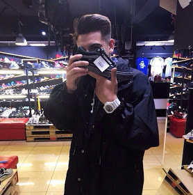

- Abdulfattah Zhilkibaev
- mail: abdulfattah.zhilkibaev@gmail.com, telegram: +77076904525, phone: +77076904525, whatsapp: +48794785043.
- I am self-organized and very motivated to become a front-end developer.
- I learn JS on htmlacademy and also doing tasks on codewars everyday.
- I’m ver interested in this course and job in future.
- Skills: Git, HTML, CSS, Bootstrap, JS basics.
- Latest projects: first_project, second_poject.
- Code examples: GitHub
- Experience: I have no experience as a developer, my best training project is Repair Design Project
- I listened to the Basic Computer Science course and successfully completed the course website development with HTML, CSS & JavaScript in IT-Academy, i also learn JS on codeacademy and do tasks on codewars. Use Udemy to learn JS too. All my projects: my GitHub.
- I graduated school, and successfully completed the course website development with HTML, CSS & JavaScript in IT - Academy.
- According to training my English level is B1(Intermediate).